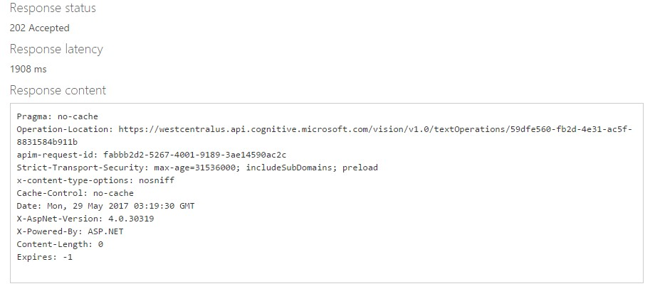

Walkthrough - Analyze HandWritten Image Text
First POST the image to the API, then GET to get your result.
Image being used for this example:

First: How to create a POST request
1. Request URL - https://[location].api.cognitive.microsoft.com/vision/v1.0/recognizeText[?handwriting]
2. Request Parameters
- handwriting: Defaults to "true" and performs handwriting recognition, else if "false" Optical Character Recognition (OCR) is performed. This is the general text recognition method, not specific to handwritten text.
3. Request Headers
- Content-Type (optional): Type of media being sent - Ex: application/json
- Ocp-Apim-Subscription-Key: (Your unique subscription key)
4. Request Body - URL or raw image binary to be analyzed by the API
Ex: {"url": "http://www.lolitas.se/wp-content/uploads/2009/03/text5.jpg"}
Example of a complete POST request
A successful REST response will look like this:

Note the ID at the end of the Operation-Location URL as this will be required to make the GET request
Second: How to create a GET request
1. Request URL - https://[location].api.cognitive.microsoft.com/vision/v1.0/textOperations/{operationId}
2. Request Parameters
- operationId: ID returned in Operation-Location field of earlier POST
3. Request Headers
- Ocp-Apim-Subscription-Key: (Your unique subscription key)
Example of a complete GET request
REST response:
{ "status": "Succeeded","recognitionResult": { "lines": [
{ "boundingBox": [ 147, 163, 420, 153, 422, 194, 149, 204 ], "text": "look better when",
"words": [ { "boundingBox": [ 147, 166, 217, 162, 221, 205, 151, 209 ], "text": "look" },
{ "boundingBox": [ 235, 161, 334, 154, 338, 197, 239, 204 ], "text": "better" },
{ "boundingBox": [ 336, 154, 438, 148, 442, 191, 341, 197 ], "text": "when" } ] },
{ "boundingBox": [ 153, 106, 381, 98, 383, 145, 154, 154 ], "text": "most things",
"words": [ { "boundingBox": [ 153, 107, 233, 104, 235, 153, 155, 156 ], "text": "most" },
{ "boundingBox": [ 245, 104, 401, 98, 403, 147, 247, 153 ], "text": "things" } ] },
{ "boundingBox": [ 159, 234, 407, 205, 413, 256, 165, 284 ], "text": "you put them",
"words": [ { "boundingBox": [ 158, 231, 216, 225, 225, 279, 167, 284 ], "text": "you" },
{ "boundingBox": [ 231, 224, 306, 217, 315, 270, 240, 277 ], "text": "put" },
{ "boundingBox": [ 318, 216, 428, 205, 437, 258, 327, 269 ], "text": "them" } ] },
{ "boundingBox": [ 177, 295, 254, 287, 256, 307, 179, 315 ], "text": "In a",
"words": [ { "boundingBox": [ 175, 296, 205, 292, 211, 313, 181, 317 ], "text": "In" },
{ "boundingBox": [ 220, 290, 266, 284, 271, 306, 225, 312 ], "text": "a" } ] },
{ "boundingBox": [ 302, 272, 414, 267, 415, 294, 303, 298 ], "text": "circle",
"words": [ { "boundingBox": [ 282, 279, 433, 265, 437, 292, 287, 306 ], "text": "circle" } ] } ] } }